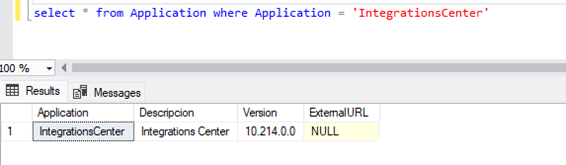
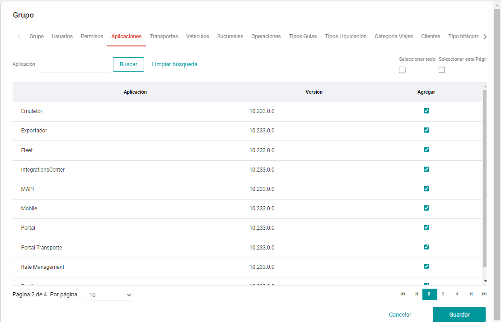
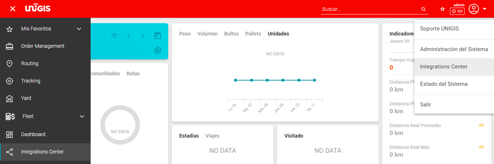
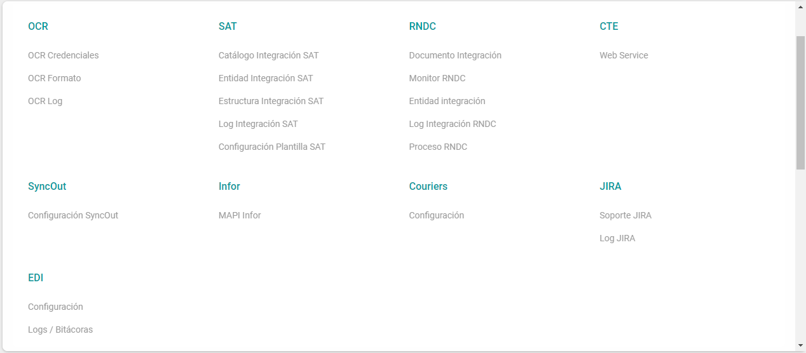
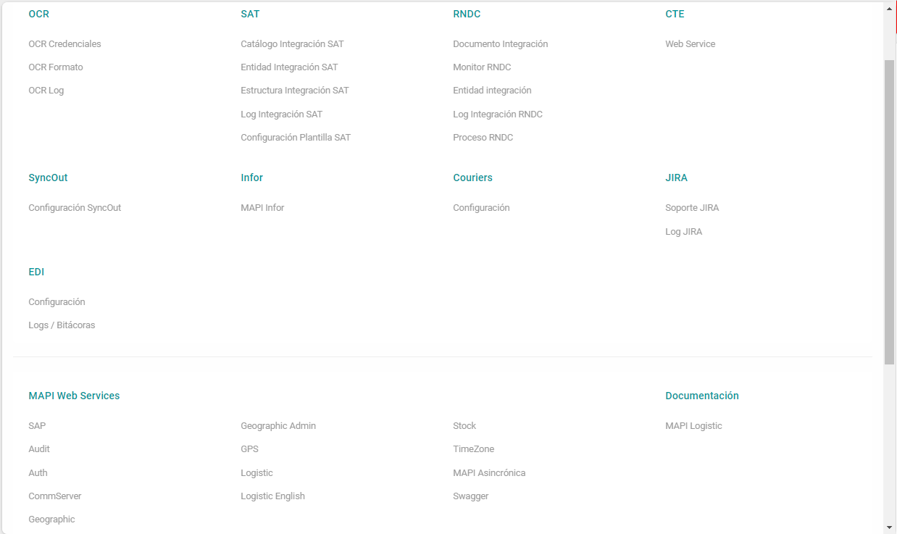
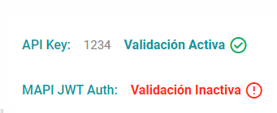

Integrations Center#
Integrations Center es una sección que centraliza todas las funcionalidades referentes a las integraciones en una nueva pantalla reubicando mucho de los enlaces que se encontraban anteriormente en la pantalla de administrador.
Todos los enlaces referentes a las integraciones estarán centralizados en un solo módulo.
Pre Requisitos#
Disponer con una versión 10.215.0.0 o superior.
Información Técnica#
Tablas y Campos#
Se inserta un nuevo registro sobre la tabla “Application” la cual hará referencia al nuevo módulo de Integrations Center.
Configuración#
Es necesario configurar los permisos de acceso para el nuevo módulo para ello es necesario ingresar a Administrador del sistema –> Grupos
Seleccionar el grupo que desee actualizar y dar la opción de editar, posteriormente en la pestaña de aplicaciones se debe seleccionar el check de “IntegrationsCenter”.
Forma de Uso#
Se podrá acceder al módulo de integraciones desde dos secciones diferentes, desde el menú lateral, o desde el menú de Log Out, ambos seleccionando la opción de Integrations Center.
Al dar clic en alguna de estas opciones se abrirá el nuevo módulo mostrando la siguiente pantalla.
Es importante recalcar que los enlaces no tuvieron algún cambio, simplemente se centralizaron en una nueva pantalla, en la sección de MAP Web Services se agregan los enlaces de los WS services, se agrega también la sección de Documentación y la Api Key la cual indicará la clave actual y el estatus si esta activa o desactivada la validación de Api Key esta será de solo lectura y si requieres actualizar su valor se deberá seguir actualizando desde la sección de parámetros.
La lista de MAPI Web Services enviarán a los siguientes enlaces.
WebService |
Link |
|---|---|
Infor |
{URL_Base_UNIGIS}/Mapi/INFOR/Service.asmx |
SAP |
{URL_Base_UNIGIS}/Mapi/SAP/Service.asmx |
SOAP Audit |
{URL_Base_UNIGIS}/Mapi/SOAP/Audit/Service.asmx |
SOAPAuth |
{URL_Base_UNIGIS}/Mapi/SOAP/Auth/Service.asmx |
SOAP CommServer |
{URL_Base_UNIGIS}/Mapi/SOAP/CommServer/Service.asmx |
SOAP Geographic |
{URL_Base_UNIGIS}/Mapi/SOAP/Geographic/Service.asmx |
SOAP Gepgraphic Admin |
{URL_Base_UNIGIS}/Mapi/SOAP/Geographic/Admin/Service.asmx |
SOAP GPS |
{URL_Base_UNIGIS}/Mapi/SOAP/GPS/Service.asmx |
SOAP Logistic |
{URL_Base_UNIGIS}/Mapi/SOAP/Logistic/Service.asmx |
SOAP Logistic English |
{URL_Base_UNIGIS}/Mapi/SOAP/Logistic/EN/Service.asmx |
SOAP Stock |
{URL_Base_UNIGIS}/Mapi/SOAP/Stock/Service.asmx |
SOAP Timezone |
{URL_Base_UNIGIS}/Mapi/SOAP/TimeZone/Service.asmx |
Al generar este nuevo módulo algunos links ya no serán visibles desde el módulo “Administrador del Sistema”, y solo serán visibles desde “Integrations center”.
Se adjunta imagen donde se resalta las secciones eliminadas con el comparativo de donde se podrá visualizar ahora, ya que algunas opciones fueron renombradas para tener un nombre más claro de la acción que realiza.
Pantalla Administrador Versión Anterior |
Pantalla Integrations Center |
|---|---|
Integraciones -> Sistema Externo |
SyncOut -> Configuración SyncOut |
Integraciones -> OCR |
NOTA: Se omite la pantalla que redirige a los subenlaces de OCR y los enlaces se muestran de forma directa en la nueva pantalla. OCR -> OCR Credenciales OCR -> OCR Formato OCR -> OCR Log |
Integraciones -> SAT |
NOTA: Se omite la pantalla que redirige a los subenlaces de SAT y los enlaces se muestran de forma directa en la nueva pantalla. SAT -> Catálogo Integraciones SAT SAT -> Entidad Integración SAT SAT -> Estructura Integraciones SAT SAT -> Log Integraciones SAT |
Integraciones -> RNDC |
NOTA: Se omite la pantalla que redirige a los subenlaces de RNDC y los enlaces se muestran de forma directa en la nueva pantalla RNDC -> Documento Integración RNDC -> Monitor RNDC RNDC -> Entidad Integración RNDC -> Log Integración RNDC RNDC -> Proceso RNDC |
Integraciones -> Integraciones |
Integraciones Logs -> Logs / Bitacoras |
Integraciones -> MAPI |
MAPI Web Services -> MAPI Asincrónica |
Sistema -> Hojas Configuración |
Sistema -> Hojas Configuración |
Sistema -> Parámetros |
NOTA: Se omite la pantalla que redirige a los subenlaces de parámetros y los enlaces se muestran de forma directa en la nueva pantalla. Sistema -> Parámetros Sistema-> App Config. |
Se adjunta imagen con la nueva posición y nombre de los enlaces en la pantalla Integrations Center.
En la sección Api Key se mostrará la clave, e indicará cuando la validación se encuentre activa o inactiva.
El valor de la validación activa o inactiva se obtiene del config de la key “ValidarApiKey_MAPI”.
Al acceder a cualquier enlace referente a integrations center se mostrará con el nuevo menú referente solo a los enlaces de integrations center.